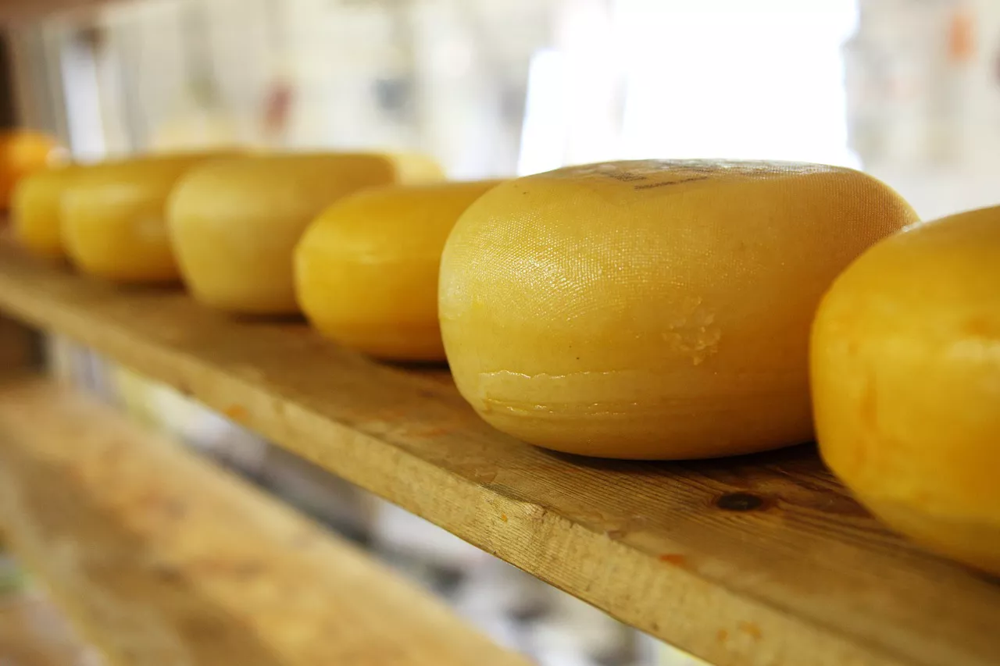

Cheese and 3 Other Foods That Will Boost Your Gambling Performance
What we choose to eat can greatly affect our mental toughness, which is exactly what’s necessary to avoid going on tilt. It’s no wonder why the most acclaimed professional gamblers in the world pick their nutrients with great care, right along with other essentials such as getting enough sleep and choosing not to play while upset or otherwise emotionally imbalanced.
Cheese
Cheese lowers your blood pressure and regulates your hormone excretion, so it goes without saying how much of an effect this has on your psyche. It is also rich in vitamin B12, so your mental fortitude is bound to benefit from it. Like all of the other foods we’ve listed, this one is easy to test. Just head on over to loyalcasino.com and see how your performance changes when under its magical influence.
Spinach
Quite often associated with the magnificent Popeye the sailor in popular culture, spinach not only contains muscle-building nutrients but does wonders for your memory as well. If you’re doing any kind of card counting in a casino, this needs no further explanation. At the same time, spinach is also rich in vitamin E and folate.
Oily fish
Whether you fancy some pichards, trout, salmon, mackerel, or even kippers, you’ll be delighted to learn that these not only taste great but also help regulate your mood. This will help you make your next move based on logic and odds as opposed to your emotions. Furthermore, thanks to it being rich in omega-3 fatty acids, DPA, and EPA, your concentration and memory will shine in its fullest potential.
Baked potato
Have you ever noticed how difficult it is to perform any kind of mentally-intensive work on an empty stomach? Strive long enough, and you’ll find that making any kind of decisions will become way more demanding than it needs to be. As it turns out, baked potato is one of the best foods to keep your stomach full and suppress your appetite during a long gambling session.
Conclusion
Now you know what to eat before reaching out for riches. Best of luck at the tables!
Credit: Cheese Bloger


For order, please contact:
üìû 03.93.83.2808
✉️ sales@vinacheese.com
üìå Pick up at our store | 347/19 Chu Van An street, Binh Thanh district, Ho Chi Minh City